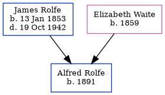

Beatrice Rolfe 1889 -
[ Home ] | [ Calendar ] | [ Surnames Index ] | [ Census Index ] | [ Family History ]The child of James Rolfe (a coachman) and Elizabeth Waite, Beatrice Rolfe, the second cousin twice-removed on the father's side of Nigel Horne, was born in Cheriton, Kent, England in 18891. On Apr 5, 1891, she was living at Cheriton Court in Cheriton1.
Parents
- James was born on Jan 13, 1853
- Elizabeth Serena was born in 1859
Citations
- 1891 England, Wales & Scotland Census - Findmypast (was age 2 and the daughter of the head of the household)
Family Tree
Generated by ged2site. Last updated on Jun 11, 2024